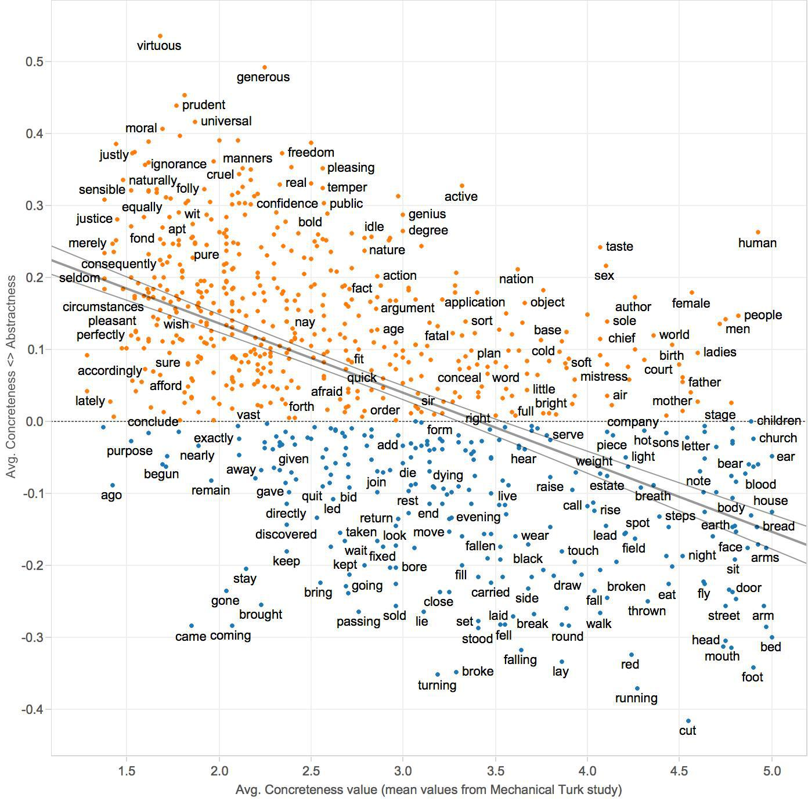

<!doctype html>
<html lang="en">
<head>
<meta charset="utf-8">
<!-- CUSTOMIZE THIS! -->
<title>Embedded Humanities</title>
<meta name="author" content="Christof Schöch">
<!-- END -->
<meta name="description" content="Slides">
<meta name="apple-mobile-web-app-capable" content="yes">
<meta name="apple-mobile-web-app-status-bar-style" content="black-translucent">
<meta name="viewport" content="width=device-width, initial-scale=1.0, maximum-scale=1.0, user-scalable=no, minimal-ui">
<link rel="stylesheet" href="css/reveal.css">
<link rel="stylesheet" href="css/theme/simple.css" id="theme">
<!-- Code syntax highlighting -->
<link rel="stylesheet" href="lib/css/zenburn.css">
<!-- Printing and PDF exports -->
<script>
var link = document.createElement( 'link' );
link.rel = 'stylesheet';
link.type = 'text/css';
link.href = window.location.search.match( /print-pdf/gi ) ? 'css/print/pdf.css' : 'css/print/paper.css';
document.getElementsByTagName( 'head' )[0].appendChild( link );
</script>
<!--[if lt IE 9]>
<script src="lib/js/html5shiv.js"></script>
<![endif]-->
</head>

<body>
<div class="reveal">
<div class="slides">
<section data-markdown="" data-separator="^\n---\n" data-separator-vertical="^\n--\n" data-charset="utf-8">
<script type="text/template">

<!-- THIS IS WHERE THE CONTENT GOES! -->
<!-- Any section element inside of this container is displayed as a slide -->

# Using Word Embeddings to Support Methods of Quantitative Text Analysis
<hr/>
<br/>
Christof Schöch<br/>(Trier, Germany)
<br/>
<br/>
<hr/>
<br/>
Embedded Humanities Workshop<br/>(DARIAH TDA Working Group)<br/>DHd Conference, Cologne, February 2018
<br/>
<br/>

---
# Overview
<br/>
1. [Introduction](#/2)
2. [Word Embeddings and Topic Coherence](#/3)
3. [Word Embeddings for Sentiment Analysis](#/4)
4. [Conclusion](#/5)


---
# Introduction


--
## Basic idea
<br/>
* Word Embedding Models are cool!  <!-- .element: class="fragment" data-fragment-index="1" -->
* How can they be useful for in Digital Humanities? <!-- .element: class="fragment" data-fragment-index="2" -->
* More precisely: how can they be helpful <br/>for other exciting digital methods? <!-- .element: class="fragment" data-fragment-index="3" -->
* Here: Topic Modeling and Sentiment Analysis <!-- .element: class="fragment" data-fragment-index="4" -->

--
## Two Models
<br/>
* French Wikipedia <!-- .element: class="fragment" data-fragment-index="1" -->
    * 1.8 million articles, 750 million words
    * skip-gram model, 300 dimensions 
* French 20th-century novel <!-- .element: class="fragment" data-fragment-index="2" -->
    * 1200 novels, 75 million words
    * skip-gram model, 300 dimensions
    * tokens: "lemma_pos"

--
## Similarity


--
## Similar Words Query
<br/>
(Wikipedia)
```
Query:   ['poésie_nom', 10]
Result:  poétique_adj     0.841
         poème_nom        0.790
         prose_nom        0.733
         littérature_nom  0.715
         poète_nom        0.704
         poétique_nom     0.701
         poésie_nam       0.700
         anthologie_nom   0.695
         littéraire_adj   0.655
         sonnet_nom       0.651
```

--
## Similarity Query
<br/>
(Wikipedia)
```
Query: ['prose_nom', 'littérature_nom']
Result: 0.511518681366

Query: ['poésie_nom', 'littérature_nom']
Result: 0.714615326722
```

--
## Evaluation
<br/>
* Method: Using a "find-the-wrong word"-task <!-- .element: class="fragment" data-fragment-index="1" -->
* Lists of similar words: <!-- .element: class="fragment" data-fragment-index="2" -->
    * vert, bleu, jaune, rouge, orange
    * argent, billet, monnaie, portemonnaie, payement
* Generate lists with an error <!-- .element: class="fragment" data-fragment-index="3" -->
    * vert, bleu, argent, jaune, rouge  

--
## Results: accuracy
<br/>
* Wikipedia model: 90% accuracy
* French novel model: 79.5% accuracy


---
# Word Embeddings<br/>for Topic Modeling

--
## Topic Modeling
<a href="img/wordle_tp002.png"></a>

--
## Coherence Assessment: Mallet Diagnostics

--
## Coherence Assessment: Palmetto


--
## Challenges
<br/>
* Mallet diagnostics are only intrinsic to the data
* Palmetto requires you to build an adequate index

--
## WEM-based coherence measure
<a href="img/roman20_topic-coherences.svg"></a>


--
## Evaluation
<br/>
Correlation between WEM-based<br/> coherence and Mallet diagnostics<br/>
(Pearson's R, p-value)
<br/>
<br/>
* mtuniformdist, 0.536, 9.22e-09
* mtcoherence, -0.004, 0.970
* mtexclusivity, 0.117, 0.246
<br/>
<br/>http://mallet.cs.umass.edu/diagnostics.php

---
# Word Embeddings<br/>for Sentiment Analysis

--
## Challenges 
<br/>
* An important branch of Sentiment Analysis<br/>requires an Emotion Lexicon <!-- .element: class="fragment" data-fragment-index="1" --> 
* These lexica usually have poor coverage<br/>(e.g. NRC: 14k words) <!-- .element: class="fragment" data-fragment-index="2" -->
* Many of them also only provide ternary information<br/>(positive, negative, neutral) <!-- .element: class="fragment" data-fragment-index="3" -->
* Combining WEM and Emotion Lexica could<br/> improve both resources <!-- .element: class="fragment" data-fragment-index="4" -->


--
## Axes of meaning (Ryan Heuser)

<br/>
(concrete vs. abstract)


--
## Axes of meaning (Ryan Heuser)

<br/>
(correlation with contemporary annotated data)


--
## Axes of meaning


--
## Axis query
<br/>
(French novels)
```
Axis: [["bonheur", "joie"],          # positive
       ["malheur", "tristesse"]]     # negative

Query:   ange
Result:  0.0875

Query:   monstre
Result   -0.1407
```

--
## Relation of words in semantic dimensions
<a href="img/roman20_words-2dim_nom_labels.svg"></a>


--
## Extend and adapt sentiment lexica
<a href="img/figure-5_sentiments.png"></a>


--
## Workflow
<br/>
* Retrieve 2000 most frequent nouns from WEM <!-- .element: class="fragment" data-fragment-index="1" -->
* Query SentiWordNet for the sentiment scores <!-- .element: class="fragment" data-fragment-index="2" -->
* 158 out of 2000 (or 7.9%) don't have a score <!-- .element: class="fragment" data-fragment-index="3" -->
* Retrieve the word vectors for each of the nouns <!-- .element: class="fragment" data-fragment-index="4" -->
* Use the 1842 nouns which have both a vector<br/> and a SWN score as training data <!-- .element: class="fragment" data-fragment-index="5" -->
* Use a regression task to predict SWN scores<br/> for the 158 words <!-- .element: class="fragment" data-fragment-index="6" --> 

--
## Newly-predicted (positive)
<br/>
* mérite	0.224
* ange	0.191
* aise	0.168
* sérieux	0.168
* merci	0.163
* savant	0.162
* parler	0.157
* seul	0.152
* remplacé 0.150
* envie	0.141
* rire	0.137

--
## Newly-predicted (negative)
<br/>
* fracas	0.294
* injure	0.292
* coupable	0.221
* vertige	0.211
* cesse	0.203
* tel	0.180
* blessé	0.157
* suite	0.156
* merci	0.153
* mélange	0.149
* envie	0.146


--
## Evaluation
<br/>
* Correlation between existing scores and <br/>the prediction for these same scores: 0.59

---
# Conclusion
<br/>
* (Hopefully) some promising perspectives
* A lot more to do; suggestions for improvements?


--
## References
<br/>Thank you! 
<br/>

<small>

* Blei, David M. „Probabilistic Topic Models“. Communications of the ACM 55, Nr. 4 (2012): 77. doi:10.1145/2133806.2133826.
* Goldberg, Yoav, und Omer Levy. „word2vec Explained: deriving Mikolov et al.’s negative-sampling word-embedding method“. arXiv.org, 2014. http://arxiv.org/abs/1402.3722.
Heuser, Ryan. „Word Vectors in the Eighteenth Century“. In Digital Humanities 2017: Conference Abstracts, 256–60. Montréal: McGill University & Université de Montréal, 2017.
* Mikolov, Tomas, Kai Chen, Greg Corrado, und Jeffrey Dean. „Efficient Estimation of Word Representations in Vector Space“. arXiv.org, 2013. http://arxiv.org/abs/1301.3781.
* Pennington, Jeffrey, Richard Socher, und Christopher D. Manning. „Glove: Global vectors for word representation“, 2014. doi:10.1.1.671.1743.
* Turney, Peter T., und Patrick Pantel. „From Frequency to Meaning: Vector Space Models of Semantics“. Journal of Artificial Intelligence Research 37 (2010): 141–88. https://arxiv.org/abs/1003.1141.
* Widdows, Dominic. Geometry and meaning. CSLI lecture notes, no. 172. Stanford CA: CSLI Publications, 2004.

<p><br/>With special thanks to gensim, pygal and reveal.js</p>


</small>

--
<br/>
<br/>
## Thank you!
<br/>
<br/>
<br/>
<br/>
<hr/>
<p>Christof Schöch, 2017</p>
<p><a href="https://christofs.github.io/">christofs.github.io</a></p>
<p><a href="https://creativecommons.org/licenses/by/4.0/">CC-BY 4.0</a><br/></p>
<hr/>
<br/>
<br/>

---
# Bonus slides

--
## CBOW Model
<a href="img/cbow-model.png"></a>

--
## Projection
<a href="img/tsne-plot_topn-nom-5800_some-labels.svg"></a>

--
## Comparing models (novels vs. Wikipedia)
<a href="img/figure-6_sens17.png"></a>


</script>
</section>


<!-- DON'T TOUCH UNLESS YOU KNOW WHAT YOU'RE DOING :-) -->
</div>
<script src="lib/js/head.min.js"></script>
<script src="js/reveal.js"></script>
<script>
// Full list of configuration options available at:
// https://github.com/hakimel/reveal.js#configuration
Reveal.initialize({
    controls: true,
    progress: true,
    slideNumber: true,
    history: true,
    center: true,
    transition: 'slide', // none/fade/slide/convex/concave/zoom
    // Optional reveal.js plugins
    dependencies: [
        { src: 'lib/js/classList.js', condition: function() { return !document.body.classList; } },
        { src: 'plugin/markdown/marked.js', condition: function() { return !!document.querySelector( '[data-markdown]' ); } },
        { src: 'plugin/markdown/markdown.js', condition: function() { return !!document.querySelector( '[data-markdown]' ); } },
        { src: 'plugin/highlight/highlight.js', async: true, callback: function() { hljs.initHighlightingOnLoad(); } },
        { src: 'plugin/zoom-js/zoom.js', async: true },
        { src: 'plugin/notes/notes.js', async: true }
        ]
    });
</script>
</body>
</html>
